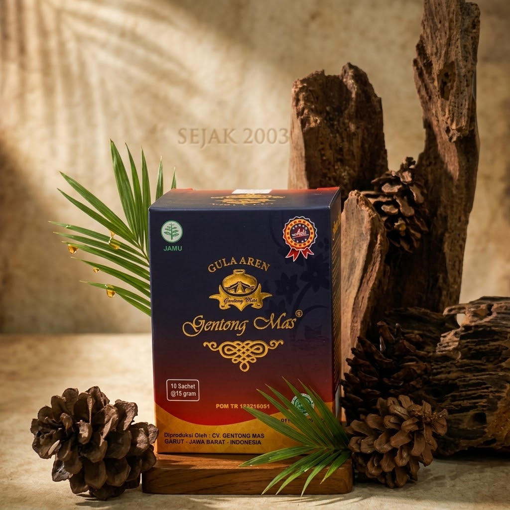

H. Aceng Hasan—atau yang lebih akrab disapa Abah oleh para jamaahnya—merupakan pengasuh Pondok Pesantren Sadang Lebak, Garut. Abah memiliki garis keturunan pendakwah yang sangat kuat dari para pendahulunya, yaitu KH. Ade Rosyied Hidayat / Ceng Ade (alm) sebagai ayah, dan KH. Apipuddin Bin H. Al Nasik (alm) selaku kakek yang merupakan pendiri Ponpes Sadang Lebak.
Pendidikan religius dan kematangan keilmuan agama didapatkan Abah saat menimba ilmu di berbagai pondok pesantren terkemuka di tanah air, di antaranya:
Kini Abah memimpin Pondok Pesantren Sadang Lebak dengan berbagai rutinitas keagamaan harian, seperti pengajaran ilmu agama santri putra-putri, pengajian rutin malam Jumat yang diikuti jamaah dari dalam dan luar Jawa, hingga pelatihan khusus bela diri. Dalam kegiatannya, Abah turun secara langsung dibantu oleh para pendakwah lainnya.

Dengan berbagai kegiatan tersebut, Ponpes Sadang Lebak menerapkan sistem bebas biaya pendidikan, makan gratis, serta jaminan pengobatan gratis bagi santri yang sakit.
Seluruh biaya operasional, konsumsi pengajian, serta perbaikan sarana dan prasarana pesantren menjadi tanggungan Abah yang didanai melalui unit-unit usaha mandiri yang dikembangkannya.
“Saya mendirikan usaha ini agar hasil penjualan memberikan kemanfaatan bagi segenap santri di pesantren—mulai dari bebas biaya sekolah, bebas makan, pengobatan santri yang sakit, hingga konsumsi pengajian rutin masyarakat.”
— H. Aceng Hasan (Abah), Pemilik & Direktur Utama CV. Gentong Mas
Selain pengasuh pesantren, Abah merupakan seorang pengusaha sukses yang memimpin perusahaan CV. Gentong Mas. Tidak banyak orang tahu bahwa produk Gentong Mas merupakan karya cipta asli dari H. Aceng Hasan (Abah) sebagai olahan racikan rempah pilihan dan gula aren khas Garut.
Walaupun bertumbuh dari lingkungan pesantren, Abah berhasil membawa perusahaan bertransformasi dari awal berupa PD. Gentong Mas menjadi CV. Gentong Mas, serta menaikkan kelas legalitas produk minuman herbal Gentong Mas dari semula berizin P-IRT hingga mengantongi izin resmi POM TR dari BPOM RI, bersertifikat Halal MUI, dan diproduksi di pabrik terstandar CPOTB (Cara Pembuatan Obat Tradisional yang Baik).
Semua ini dilakukan agar masyarakat dapat merasakan manfaat Gentong Mas dalam menjaga kesehatan sebagai minuman yang menyegarkan, aman, dan nyaman dari seluruh aspek regulasi.
Manfaat & Keunggulan Gentong Mas:
Di usianya saat ini, Abah terus berkomitmen untuk memperluas kebermanfaatan Gentong Mas bagi masyarakat luas, sekaligus menginspirasi para pelaku usaha agar senantiasa memberikan kontribusi nyata yang terasa langsung oleh masyarakat.